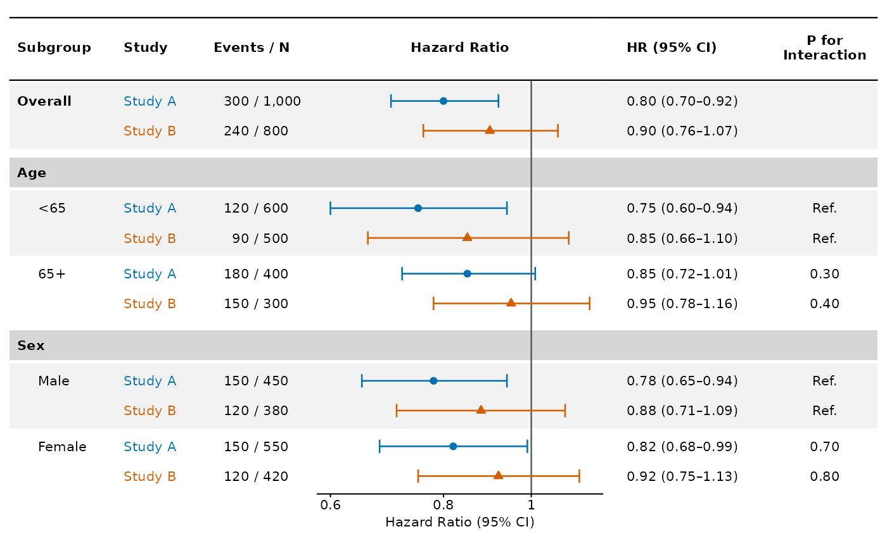
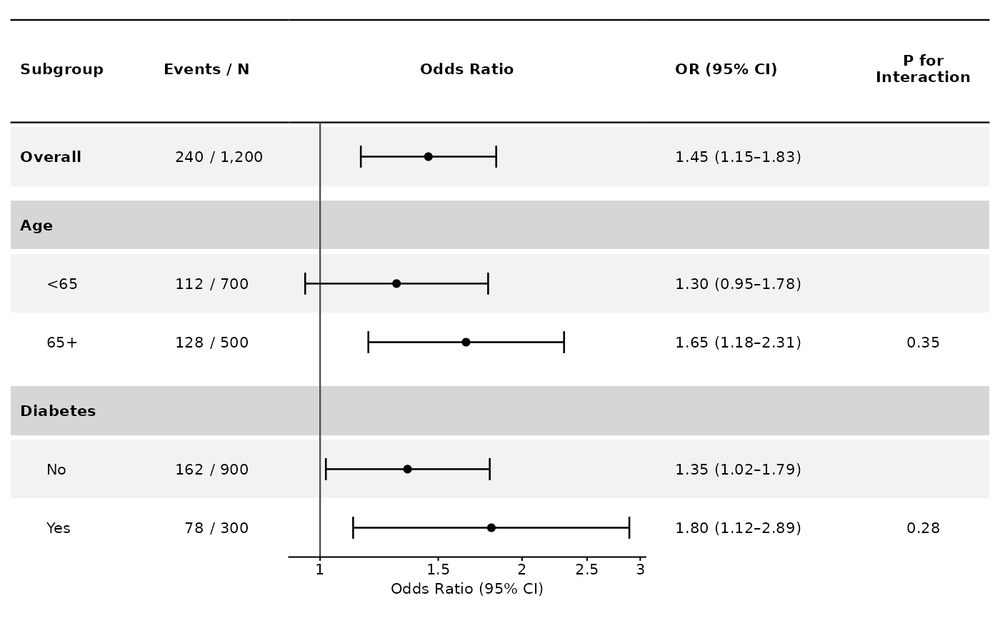
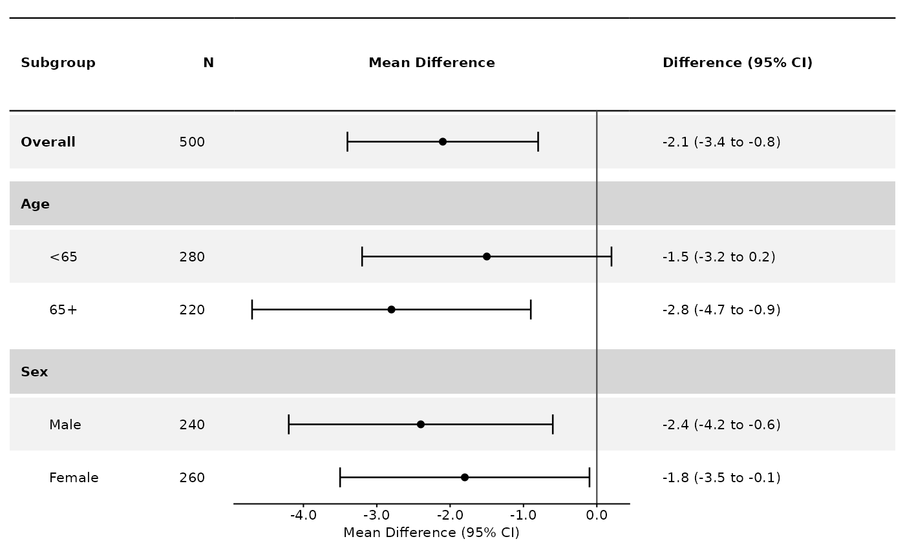
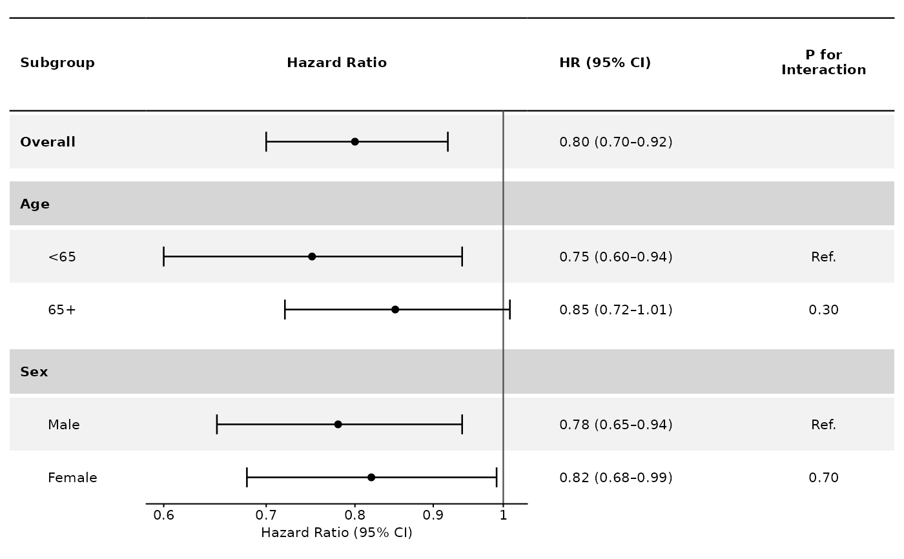

One stacked forest plot with aligned text columns, like a journal table:
Subgroup | Group | Events / N | forest | Estimate (95% CI) | P for
interaction. Each subgroup variable gets a bold heading row, then each of its
levels a block of rows, one per group (e.g. cohort or study), on alternating
gray/white background bands. Without group_col there is no Group column and
each level is one row. The Events / N and P for interaction columns are drawn
only when their columns are supplied.
Usage
plot_subgroup_forest(
data,
effect_size,
ci_low,
ci_high,
subgroup = "subgroup",
level = "level",
group_col = NULL,
n_col = NULL,
events_col = NULL,
pvalue_col = NULL,
ref_col = NULL,
group_colors = NULL,
group_shapes = NULL,
null_value = 1,
log_scale = FALSE,
x_limits = NULL,
x_breaks = NULL,
x_labels = NULL,
estimate_digits = 2,
pvalue_threshold = 0.05,
ref_label = "Ref.",
labels = NULL,
text_size = 8,
font_family = "",
forest_width = 1.8,
gap_level = 0.2,
gap_subgroup = 0.4,
band_fill = "gray95",
heading_fill = "gray84"
)Arguments
- data
A data.frame or tibble with one row per subgroup level (per group).
- effect_size
String name of the estimate column (e.g. a hazard ratio).
- ci_low
String name of the lower confidence interval column.
- ci_high
String name of the upper confidence interval column.
- subgroup
String name of the subgroup variable column (e.g. values
"Age","Sex"). Default"subgroup".- level
String name of the subgroup level column (e.g. values
"<65","65+"). A level of""orNAmarks a subgroup without levels, such as an overall estimate: it gets no heading, and its subgroup name is its (bold) row label. Default"level". Subgroups and their levels are drawn in the order of their factor levels or, for character columns, the order they first appear indata.- group_col
Optional string name of a column identifying the group (e.g. cohort), drawn in its factor-level order or order of appearance.
NULL(default) for a single group: no Group column, one row per level.- n_col, events_col
Optional string names of the columns with the number of participants and of events. With
n_colthere is an N column, and with both an Events / N column. DefaultNULL(no column).- pvalue_col
Optional string name of the interaction p-value column, for the P for interaction column. Default
NULL(no column).- ref_col
Optional string name of a logical column,
TRUEon each subgroup's reference level, shown asref_labelin the P for interaction column. DefaultNULL(no reference labels).- group_colors, group_shapes
Point and text color, and point shape (a filled shape, 21-25), of each group: named by group, or unnamed in group order. Default: Okabe-Ito colors and shapes
c(21, 24, 22, 25, 23)in group order; black circles for a single group.- null_value
Numeric. Position of the vertical "no effect" line. Default
1(ratios); use0for differences.- log_scale
Logical. Whether to draw the estimate axis on a log scale. Recommended for ratios (hazard, odds, risk ratios): on a linear axis their CIs look lopsided, and a ratio of 0.5 looks like a smaller effect than one of 2. Default
FALSE.- x_limits, x_breaks, x_labels
Estimate axis limits, breaks and break labels. Default: limits spanning every CI and
null_valueplus 5% on each side, breaks frompretty()(or, withlog_scaleacross at least a tenfold range,scales::breaks_log()), labels from the breaks. A CI running past a limit is cut there and drawn with an arrow (not a cap) at the cut end, and an estimate beyond the limits is not drawn, with a warning; the text column still shows the full values.- estimate_digits
Integer. Decimal places of the estimate and its CI in the text column. Default
2.- pvalue_threshold
Numeric. Interaction p-values below this are bold. Default
0.05.- ref_label
Character. Label of the reference levels in the P for interaction column. Default
"Ref.".- labels
Named character vector replacing any of the default column headers and axis title:
subgroup("Subgroup"),group("Group"),counts("Events / N", or"N"withoutevents_col),forest("Estimate"),estimate("Estimate (95% CI)"),pvalue("P for\nInteraction"),x_axis("Estimate (95% CI)"). Name the estimate here, e.g.c(forest = "Hazard Ratio", estimate = "HR (95% CI)", x_axis = "Hazard Ratio (95% CI)").- text_size
Numeric. Text size, in points. Default
8.- font_family
Character. Font family of all text. Default
"", the device's default sans font. One of the PDF families ("sans","serif","mono","Helvetica", ...) works on any device. Any other installed font (e.g."Arial","Roboto") needs the systemfonts package, which measures it for the column widths, and a device that can draw it, such asragg::agg_png()(e.g.ggplot2::ggsave(..., device = ragg::agg_png)); the basegrDevices::pdf()device cannot.- forest_width
Numeric. Width of the forest panel, in inches. Default
1.8.- gap_level
Numeric. Vertical space between the levels of a subgroup, in row heights. Default
0.2.- gap_subgroup
Numeric. Extra vertical space before each subgroup heading, in row heights. Default
0.4.- band_fill, heading_fill
Fill colors of the shaded level bands and of the subgroup heading rows. Defaults
"gray95"and"gray84".
Details
Every group gets a row in every level (in group order), so the groups line
up from level to level; a group with no estimate for a level keeps an empty
row shown with a dash. The interaction p-value is per group: ref_label on
the reference level, blank where the group has only one level of the subgroup
(no interaction to test), bold where p < pvalue_threshold.
The plot is built as three ggplots (left text, forest, right text) on the same
y scale, joined with patchwork. Column widths are measured from the text, in
inches, so draw the plot at the size subgroup_forest_size() returns: at a
narrower width the text columns overlap, at a wider one they spread apart.
For sharp text in a saved file, use ggplot2::ggsave() at that size with
dpi = 300; a plot pane stretched beyond that size makes the text look small.
See also
subgroup_forest_size() for the figure size to draw it at, and
plot_confidence_intervals() for a plain dot-and-whisker plot.
Examples
# 1. Hazard ratios (time-to-event outcome), several cohorts, with
# Events / N and the P for interaction column
df_hr <- data.frame(
study = rep(c("Study A", "Study B"), each = 5),
subgroup = rep(c("Overall", "Age", "Age", "Sex", "Sex"), 2),
level = rep(c("", "<65", "65+", "Male", "Female"), 2),
n = c(1000, 600, 400, 450, 550, 800, 500, 300, 380, 420),
events = c(300, 120, 180, 150, 150, 240, 90, 150, 120, 120),
hr = c(0.80, 0.75, 0.85, 0.78, 0.82, 0.90, 0.85, 0.95, 0.88, 0.92),
lcl = c(0.70, 0.60, 0.72, 0.65, 0.68, 0.76, 0.66, 0.78, 0.71, 0.75),
ucl = c(0.92, 0.94, 1.01, 0.94, 0.99, 1.07, 1.10, 1.16, 1.09, 1.13),
p_int = c(NA, NA, 0.30, NA, 0.70, NA, NA, 0.40, NA, 0.80),
is_ref = rep(c(FALSE, TRUE, FALSE, TRUE, FALSE), 2)
)
hr_labels <- c(
group = "Study",
forest = "Hazard Ratio",
estimate = "HR (95% CI)",
x_axis = "Hazard Ratio (95% CI)"
)
p <- plot_subgroup_forest(
df_hr,
effect_size = "hr",
ci_low = "lcl",
ci_high = "ucl",
group_col = "study",
n_col = "n",
events_col = "events",
pvalue_col = "p_int",
ref_col = "is_ref",
log_scale = TRUE,
labels = hr_labels
)
p

# the size to draw it at: same arguments
size <- subgroup_forest_size(
df_hr,
effect_size = "hr",
ci_low = "lcl",
ci_high = "ucl",
group_col = "study",
n_col = "n",
events_col = "events",
pvalue_col = "p_int",
ref_col = "is_ref",
labels = hr_labels
)
# ggplot2::ggsave("forest.png", p, width = size[["width"]],
# height = size[["height"]])
# 2. Odds ratios for a binary outcome, on a log scale, with Events / N
# (patients with the outcome / patients in the subgroup)
df_or <- data.frame(
subgroup = c("Overall", "Age", "Age", "Diabetes", "Diabetes"),
level = c("", "<65", "65+", "No", "Yes"),
n = c(1200, 700, 500, 900, 300),
events = c(240, 112, 128, 162, 78),
or = c(1.45, 1.30, 1.65, 1.35, 1.80),
or_low = c(1.15, 0.95, 1.18, 1.02, 1.12),
or_high = c(1.83, 1.78, 2.31, 1.79, 2.89),
p_int = c(NA, NA, 0.35, NA, 0.28)
)
plot_subgroup_forest(
df_or,
effect_size = "or",
ci_low = "or_low",
ci_high = "or_high",
n_col = "n",
events_col = "events",
pvalue_col = "p_int",
log_scale = TRUE,
labels = c(
forest = "Odds Ratio",
estimate = "OR (95% CI)",
x_axis = "Odds Ratio (95% CI)"
)
)

# 3. A generic effect size (here a mean difference, null at 0) with N per
# subgroup level but no events: omit events_col
df_diff <- data.frame(
subgroup = c("Overall", "Age", "Age", "Sex", "Sex"),
level = c("", "<65", "65+", "Male", "Female"),
n = c(500, 280, 220, 240, 260),
diff = c(-2.1, -1.5, -2.8, -2.4, -1.8),
diff_low = c(-3.4, -3.2, -4.7, -4.2, -3.5),
diff_high = c(-0.8, 0.2, -0.9, -0.6, -0.1)
)
plot_subgroup_forest(
df_diff,
effect_size = "diff",
ci_low = "diff_low",
ci_high = "diff_high",
n_col = "n",
null_value = 0,
estimate_digits = 1,
labels = c(
forest = "Mean Difference",
estimate = "Difference (95% CI)",
x_axis = "Mean Difference (95% CI)"
)
)

# 4. No Events / N column at all: omit n_col and events_col
plot_subgroup_forest(
df_hr[df_hr$study == "Study A", ],
effect_size = "hr",
ci_low = "lcl",
ci_high = "ucl",
pvalue_col = "p_int",
ref_col = "is_ref",
log_scale = TRUE,
labels = hr_labels[-1]
)
